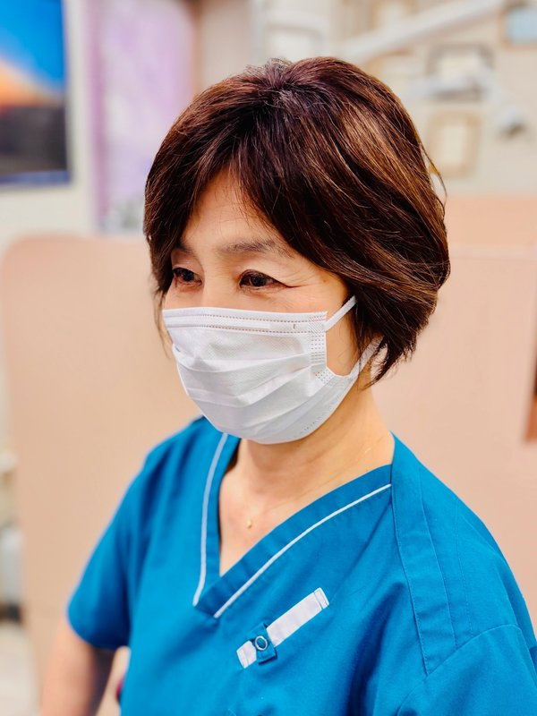
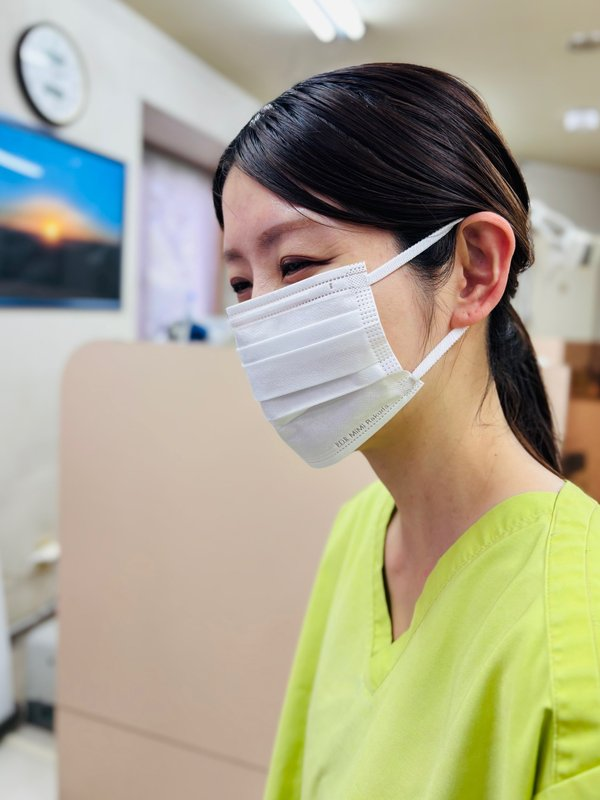
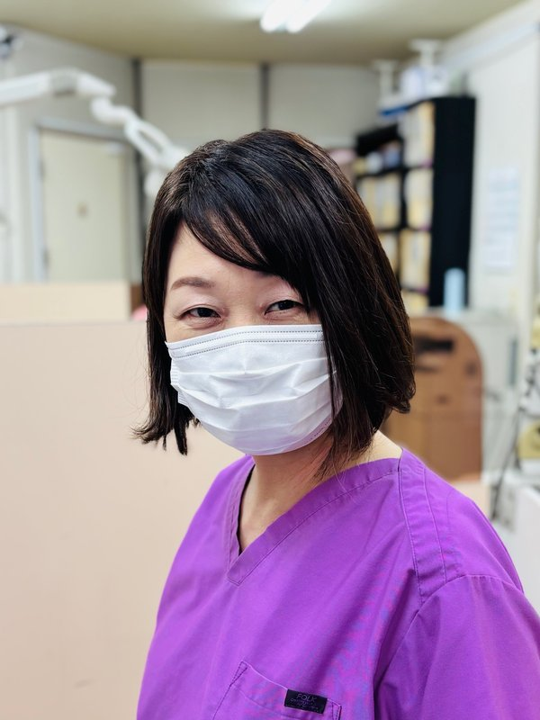

Doctor & Staff
院長・スタッフ紹介

Takuo Fujimura
藤村 卓生
藤村歯科クリニック 院長／歯科医師
全身の健康はお口から
鹿児島市の皇徳寺台で開業して、約40年になります。今までの経験から、噛みあわせが全身の健康に影響することを痛感しています。なるべく歯を削らない、痛みに配慮した治療を心がけ、患者様とよく話し合いながら、おひとりおひとりに合った治療を行っています。皆様のお口の健康、ひいては全身の健康へと導き、幸せに過ごしていただけたらと思っています。
すべては患者様のために
私自身、幼い頃から虫歯に悩まされ、虫歯治療・部分入れ歯・インプラントなど、さまざまな歯科治療を受けてきました。自分で体験したからこそ、患者様の不安やお気持ちが理解できるつもりです。自分がしてほしいことを、患者様にもして差し上げたい。その思いで、日々の診療に携わっています。
| 学歴 | 昭和大学歯学部歯学科 卒業 |
|---|---|
| 経歴 | 鹿児島大学歯学部 第一口腔外科 勤務 藤村歯科クリニック 開業（鹿児島市皇徳寺台） |
| 所属 | 日本先進インプラント医療学会（AIM） ミラクルデンチャーFG会員 |
Staff
スタッフ紹介
笑顔でお迎えし、安心して通っていただける医院を目指しています。
-

歯科衛生士
患者様が安心して治療を受けられるよう、丁寧なご説明とコミュニケーションを大切にしています。
-

歯科衛生士
クリーニングや歯みがきのアドバイスを通して、お口の健康づくりをお手伝いします。
-

歯科衛生士
定期検診やメンテナンスを通して、患者様の大切な歯を長く守るお手伝いをしています。
待ち時間を少なくするため、
予約優先で診療しております
急な痛み・腫れの方は、まずお電話でご相談ください。